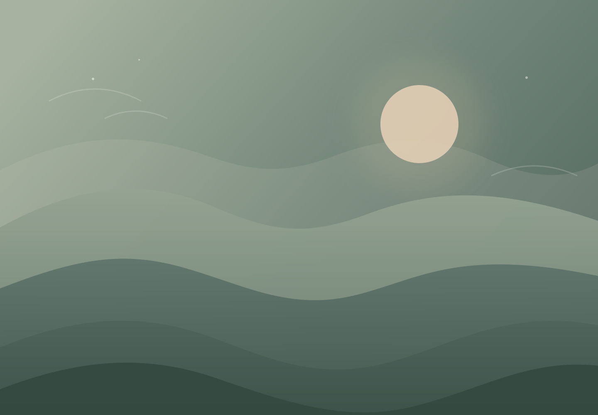
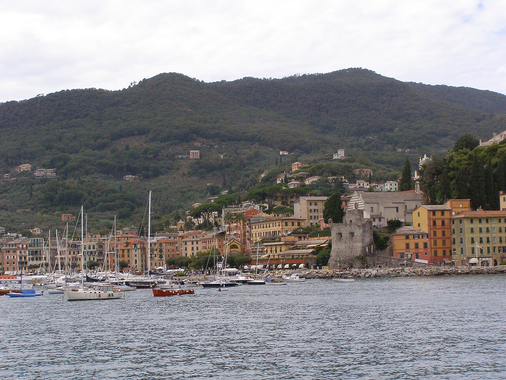
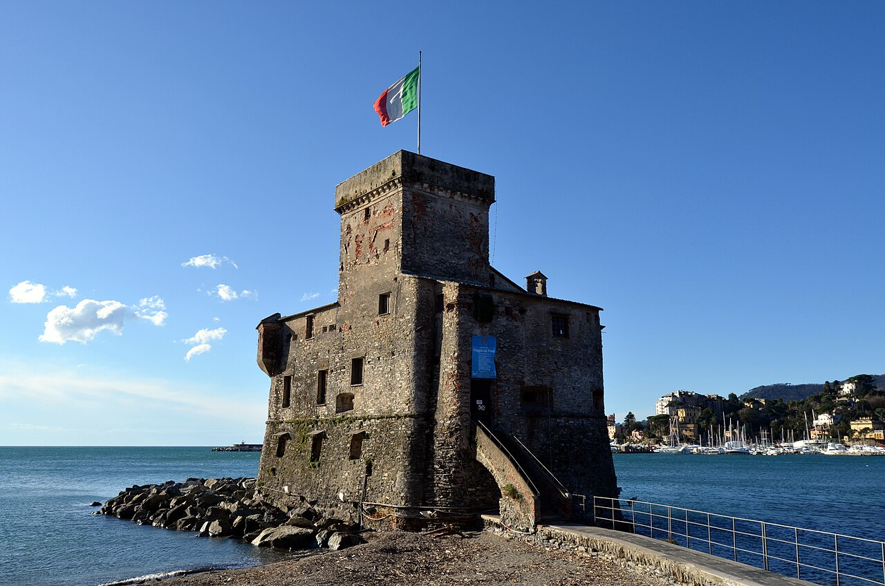
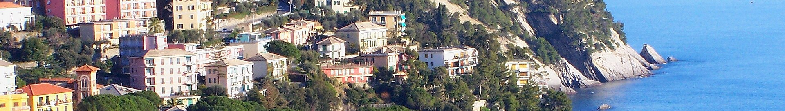

08:30 · Santa Margherita Ligure
Arrivo e preparativi
Colazione, sistemazione e un momento per preparare lo zaino prima di mettersi in cammino.

Una proposta per teUna parola, e si apre una piccola fuga.
Se ti va di trascorrere un weekend tra panorami mozzafiato, natura e relax, scrivi il tuo nome nel campo password.

Un fine settimana per due
Una proposta per Francesca
Una giornata a piedi tra i borghi del Tigullio, poi il lusso di una domenica senza fretta. Il resto lo decide il vostro passo.
Scopri il programmaFoto: Andrzej Otrębski · CC BY-SA 3.0, Wikimedia Commons
Il piano del weekend
Il sabato si conquista il panorama passo dopo passo. La domenica si lascia spazio al mare, ai caruggi e a un buon pranzo ligure.
Dal porto di Santa Margherita fino a Chiavari, lungo la tappa 5 del Cammino nel Tigullio.
08:30 · Santa Margherita Ligure
Colazione, sistemazione e un momento per preparare lo zaino prima di mettersi in cammino.
09:15 · Tappa 5
Mulattiere, sentieri e brevi tratti asfaltati accompagnano il percorso tra borghi di mare e salite panoramiche.
Tardo pomeriggio · Chiavari
La tappa si chiude tra i portici storici di Chiavari. Da qui, rientro in treno a Santa Margherita e meritato riposo.
Lungo la costa
Dal Castello di Rapallo al panorama di Zoagli, due tappe da assaporare anche con gli occhi.


Il percorso, a colpo d’occhio
Esplora la traccia della tappa 5 e orientati tra i borghi del Tigullio.
Se la mappa non si carica, aprila direttamente in Google Maps.
Niente sveglia di corsa: solo il borgo, il mare e una tavola ligure.
Mattina · Santa Margherita
Passeggiata tra i caruggi, visita a Villa Durazzo oppure un caffè con vista sul porto turistico.
Pranzo
Una pausa senza fretta per godersi i sapori locali prima di rimettersi in viaggio.
Pomeriggio
Partenza in auto e rientro in provincia di Cuneo, con il mare ancora negli occhi.
Tutto pronto, senza fretta
Un’idea di weekend da tenere leggera: si parte insieme, e si sceglie strada facendo quanto lontano arrivare.